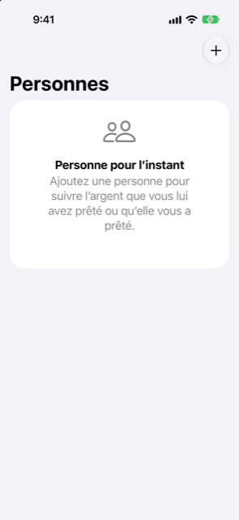

Guide › Comptes, cartes et personnes
Personnes : prêté et emprunté
L'argent que vous avez prêté ou que vous devez, personne par personne.
Personnes garde un solde avec chaque personne à qui vous prêtez de l'argent ou chez qui vous en empruntez. Prêter n'est pas dépenser et être remboursé n'est pas un revenu : l'argent circule entre votre compte et la personne, donc vos chiffres de dépenses et de revenus ne sont pas affectés.

Quand l'utiliser
- Vous avez prêté de l'argent à quelqu'un et voulez vous souvenir de qui doit quoi à qui, et combien.
- Vous avez emprunté à un membre de votre famille ou à un ami et voulez voir ce que vous devez encore.
- Vous voulez que les remboursements restent en dehors de vos chiffres de dépenses et de revenus, pendant que l'argent continue de circuler dans et hors de vos comptes.
Étape par étape
- Ouvrez Plan, puis Personnes : prêté et emprunté, et touchez Ajouter.
- Tapez le nom de la personne dans la case intitulée Nouvelle personne et touchez Ajouter.
- Ouvrez la personne depuis la liste.
- Sous Enregistrer, choisissez ce qui s'est passé : J’ai prêté, J’ai emprunté, Ils m’ont remboursé ou Je les ai remboursés.
- Saisissez le montant, le compte par lequel l'argent a circulé et la date, puis touchez le bouton Enregistrer.
Le solde de la personne montre qui doit quoi à qui : positif signifie qu'elle vous doit, négatif signifie que vous lui devez. Quand rien n'est dû de part ni d'autre, il est indiqué Tout est réglé.
Bon à savoir
- Vous pouvez aussi ajouter une personne depuis Comptes : touchez le bouton plus, puis Ajouter une personne.
- Les personnes apparaissent aussi sur la page Comptes, sous Personnes, chacune avec qui doit quoi à qui et pour combien.
- Prêter ou être remboursé n'est jamais compté comme une dépense ou un revenu. L'argent circule entre votre compte et la personne, et nulle part ailleurs.
- Une personne peut avoir un solde dans plus d'une devise. Chaque solde est gardé dans sa propre devise ; la liste montre une ligne pour chacune.
- Pour ajouter une dette qui existe déjà au moment où vous commencez, utilisez le guide de configuration. À l'étape Prêts et dettes, touchez Ajouter, puis Argent avec une personne.
- Si un solde ne sera pas remboursé, ouvrez la personne et utilisez le bouton en bas de la page : passez en perte l'argent qui vous est dû et qui ne sera pas remboursé, ou marquez ce que vous devez comme pardonné.
- Un remboursement que vous enregistrez déplace de l'argent réel le jour où vous le saisissez. Il est dans les soldes de vos comptes à partir de ce jour, et les prévisions partent de ces soldes.
En rapport
Quelque chose n’est pas clair ou manque ? Écrivez à support@raveniq.ai en indiquant la page.